Chapitre 1 : Les ensembles de nombres
Seconde · Chapitre 1 — Les ensembles de nombres · cours de Frederik de Peyrelongue
I. Nombres entiers
1.1 Quelques nombres particuliers
Les nombres premiers
Un entier naturel non nul est dit premier lorsqu'il possède exactement deux diviseurs distincts : $1$ et lui-même.
$2$ – $3$ – $5$ – $7$ – $11$ – $13$ – $17$.
Les nombres pairs et impairs
Soit $n\in\Z$ : $n$ est un nombre
- pair lorsqu'il existe $k\in\Z$ tel que $n=2\times k$ ;
- impair lorsqu'il existe $k\in\Z$ tel que $n=2\times k+1$.
$15=7\times 2+1$ est un nombre impair ; $24=2\times 12$ est un nombre pair.
Montrer que le carré d'un nombre impair est impair.
Soit $k$ un nombre entier impair, donc $k=2n+1$ avec $n$ entier.
On en déduit que $k^{2}$ est aussi un nombre impair.
Conclusion : $k$ impair $\Longrightarrow$ $k^{2}$ est impair.
Rappel : la contraposée de toute proposition vraie est aussi vraie.
Contraposée : $k^{2}$ n'est pas impair $\Longrightarrow$ $k$ n'est pas impair.
On peut réécrire la proposition : $k^{2}$ est pair $\Longrightarrow$ $k$ est pair.
Montrer que le carré d'un nombre pair est pair.
Soit $k$ un nombre entier pair, donc $k=2n$ avec $n$ entier.
On en déduit que $k^{2}$ est aussi un nombre pair.
Conclusion : $k$ pair $\Longrightarrow$ $k^{2}$ est pair.
La contraposée de toute proposition vraie est aussi vraie.
Contraposée : $k^{2}$ n'est pas pair $\Longrightarrow$ $k$ n'est pas pair.
On peut l'écrire aussi : $k^{2}$ est impair $\Longrightarrow$ $k$ est impair. C'est la réciproque de l'exercice.
Soit $k\in\Z$. L'entier relatif $k^{2}$ est impair si, et seulement si, $k$ est impair.
$k^{2}$ est pair si, et seulement si, $k$ est pair.
II. Les entiers relatifs
$-2$ est appelé l'opposé de $2$.
III. Nombres décimaux, nombres rationnels
3.1 Les nombres décimaux
Un nombre décimal est un nombre de la forme $\dfrac{a}{10^{n}}$, avec $a$ entier et $n$ entier naturel.
Un nombre décimal peut s'écrire avec un nombre fini de chiffres après la virgule.
L'ensemble des nombres décimaux est noté $\D$.
$0{,}17\in\D$ $3\in\D$ $\dfrac{1}{3}\notin\D$ mais $\dfrac{3}{5}\in\D$.
3.2 Nombres rationnels
Un nombre rationnel est un nombre sous la forme d'un quotient $\dfrac{a}{b}$ avec $a$ un entier et $b$ un entier non nul. L'ensemble des nombres rationnels est noté $\Q$.
$\dfrac{1}{3}\in\Q$ $4\in\Q$ $-5{,}4\in\Q$ $\sqrt{2}\notin\Q$.
Remarque : $\Q$ peut aussi être considéré comme l'ensemble des nombres dont le développement décimal est fini ou illimité mais périodique. Un nombre avec un développement décimal fini (nombre décimal) ou avec un développement décimal illimité périodique peut toujours se mettre sous la forme d'une fraction.
$\D$, l'ensemble des nombres décimaux, est un sous-ensemble des nombres rationnels $\Q$.
Exemples :
développement décimal fini $15{,}53=\dfrac{1553}{100}\in\D\subset\Q$ (nombre décimal)
développement décimal illimité périodique $a=1{,}7232323\dots$ : la séquence $23$ est périodique.
donc
Démonstration au programme : $\dfrac{1}{3}\in\Q$ mais $\dfrac{1}{3}\notin\D$.
Démontrons que le nombre rationnel $\dfrac{1}{3}$ n'est pas décimal :
On va effectuer une démonstration par l'absurde en supposant que $\dfrac{1}{3}$ est décimal.
Si notre démonstration aboutit à une absurdité, cela prouvera que notre hypothèse de départ est fausse.
Supposons donc que $\dfrac{1}{3}$ est décimal. Alors il peut s'écrire sous la forme $\dfrac{1}{3}=\dfrac{a}{10^{p}}$ avec $a$ entier relatif et $p$ entier naturel.
Donc $10^{p}=3a$, et donc $10^{p}$ est divisible par $3$.
Un nombre est divisible par $3$ lorsque la somme de ses chiffres est divisible par $3$.
Or ceci est impossible, car la somme des chiffres de $10^{p}$ est $1$, et $1$ n'est pas divisible par $3$.
Donc l'hypothèse posée au départ est fausse, et donc $\dfrac{1}{3}$ n'est pas décimal !
IV. Notions de nombres réels
4.1 Les nombres irrationnels
Un nombre qui n'est pas rationnel est dit irrationnel.
$\sqrt{2}$, $\sqrt{3}$ ou encore $\pi$ sont des nombres irrationnels. Ils ne peuvent pas s'écrire sous la forme $\dfrac{a}{b}$ avec $a$ et $b$ deux entiers relatifs, $b$ non nul.
Comme pour un nombre rationnel, il n'est pas possible d'écrire un nombre irrationnel sous forme décimale. En effet, le nombre de décimales qui le constitue est infini, mais de surcroît ces décimales se suivent sans suite logique.
Démonstration au programme : irrationalité de $\sqrt{2}$.
On va effectuer une démonstration par l'absurde en supposant que $\sqrt{2}$ est rationnel.
Supposons donc que $\sqrt{2}$ est un rationnel.
Il s'écrit alors $\sqrt{2}=\dfrac{a}{b}$ avec $a$ et $b$ entiers naturels premiers entre eux, $b$ non nul.
Ainsi : $\dfrac{a^{2}}{b^{2}}=2$, soit $a^{2}=2b^{2}$. On en déduit que $a^{2}$ est pair, ce qui entraîne que $a$ est pair.
En effet, si $a$ était impair, alors $a^{2}$ serait impair (en effet $(2k+1)^{2}=2\left(2k^{2}+2k\right)+1$).
Donc $a$ est pair : il existe un entier naturel $k$ tel que $a=2k$.
Comme $a^{2}=2b^{2}$, on a : $(2k)^{2}=2b^{2}$.
Soit : $4k^{2}=2b^{2}$, soit encore $b^{2}=2k^{2}$.
On en déduit que $b^{2}$ est pair, ce qui entraîne que $b$ est pair. Or $a$ et $b$ sont premiers entre eux, donc ils ne peuvent être pairs simultanément. On aboutit à une absurdité.
Donc $\sqrt{2}$ n'est pas un rationnel. Et donc $\sqrt{2}$ est un irrationnel.
L'ensemble des nombres rationnels et irrationnels est l'ensemble des nombres réels. On le note $\R$.
4.2 La droite numérique
Un nombre est réel s'il est l'abscisse d'un point d'une droite graduée appelée la droite numérique.
L'ensemble des nombres réels est noté $\R$.
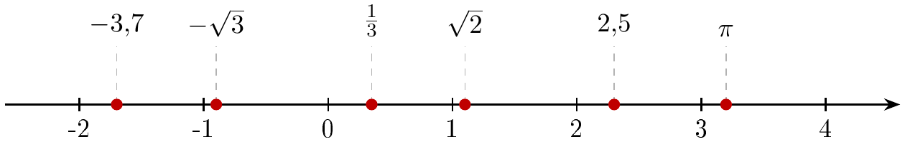
C'est l'ensemble de tous les nombres que nous utiliserons en classe de seconde.
$2$, $0$, $-5$, $0{,}67$, $\dfrac{1}{3}$, $\sqrt{3}$ ou $\pi$ appartiennent à $\R$.
4.3 Classification des nombres
Tous les nombres de l'ensemble des entiers naturels $\N$ appartiennent à l'ensemble des entiers relatifs $\Z$. On dit que l'ensemble $\N$ est inclus dans l'ensemble $\Z$. On note : $\N\subset\Z$.
On a également les inclusions suivantes :
La classification des nombres :
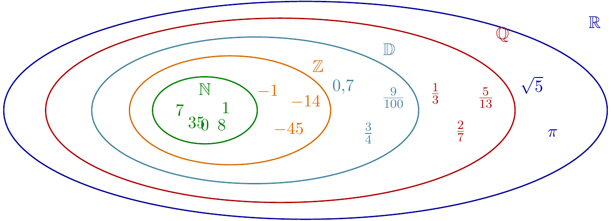
4.4 Déterminer un arrondi d'un nombre
Méthode : donner un encadrement d'un nombre réel
À l'aide de la calculatrice, donner un encadrement à $10^{-2}$ de $\sqrt{2}$ et de $\sqrt{3}$.
La calculatrice affiche des valeurs approchées :
On a alors les encadrements à $10^{-2}$ :
V. Propriétés des nombres réels
Les nombres réels jouissent des propriétés ci-dessous, c'est-à-dire que, quelles que soient les valeurs que l'on donne aux lettres $a$, $b$, $c$ et $d$, les relations suivantes sont toujours vraies :
- La somme de deux nombres réels est un nombre réel.
- Le produit de deux nombres réels est un nombre réel.
- $a+b=b+a$ $a\times b=b\times a$ commutativité
- $a+(b+c)=(a+b)+c$ $a\times(b\times c)=(a\times b)\times c$ associativité
- $0+a=a$ $1\times a=a$ élément neutre
- $a+(-a)=0$ $a\times\dfrac{1}{a}=1$ élément symétrique
- $a\times(b+c)=a\times b+a\times c$ distributivité
- $(a+b)(c+d)=ac+ad+bc+bd$ double distributivité
- $(-a)b=a(-b)=-ab$ $(-a)(-b)=ab$ règle des signes
Illustration de la distributivité / mise en évidence
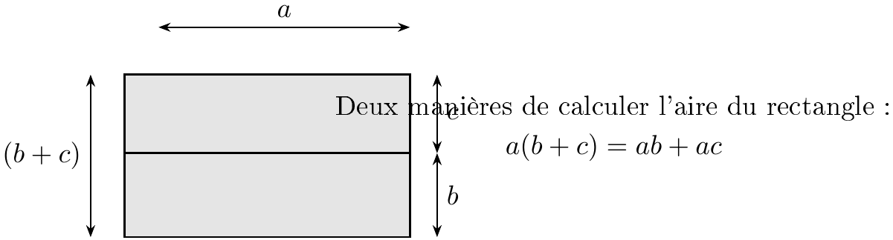
Illustration de la double distributivité / mise en évidence
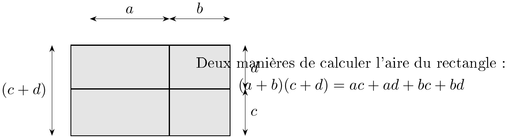
Règle de la multiplication par zéro
Lorsque l'on multiplie un nombre réel par $0$, on trouve toujours $0$.
Autrement dit : $a\cdot 0=0\cdot a=0$.
Dire que le produit de deux nombres réels vaut $0$ est équivalent à dire que l'un des deux nombres (au moins) est égal à $0$.
Autrement dit : $a\cdot b=0\iff a=0$ ou $b=0$.
5.1 Ordre des opérations
Pour déterminer la valeur d'une expression arithmétique, on décide d'effectuer les différentes opérations en suivant l'ordre indiqué par les règles ci-dessous :
- Les opérations à l'intérieur d'une paire de parenthèses qui ne contient pas de parenthèse.
- Les puissances.
- Les multiplications et les divisions de gauche à droite.
- Les additions et les soustractions de gauche à droite.
Remarques
a) Si, dans une écriture sans parenthèse, il ne reste que des multiplications et des divisions (ou que des additions et des soustractions), il faut effectuer ces opérations de gauche à droite :
b) La barre de fraction représente une division, mais attention à l'ordre des opérations :
VI. Intervalles de $\R$
6.1 Notations
L'ensemble de tous les nombres réels $x$ tels que $2\leqslant x\leqslant 4$ peut se représenter sur une droite graduée.
Cet ensemble est appelé un intervalle et se note $[2\,;4]$.
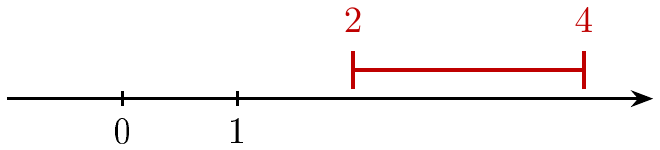
Exemple :
L'ensemble de tous les nombres réels $x$ tels que $-2\leqslant x\leqslant 7$ se note $[-2\,;7]$.
On a par exemple : $4\in[-2\,;7]$ $-1\in[-2\,;7]$ $8\notin[-2\,;7]$.
| Nombres réels $x$ | Notation | Représentation |
| $2\leqslant x\leqslant 4$ | $[2\,;4]$ |  |
| $-1<x\leqslant 3$ | $]-1\,;3]$ | 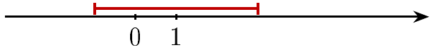 |
| $0\leqslant x<2$ | $[0\,;2[$ | 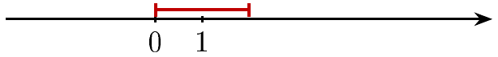 |
| $2<x<4$ | $]2\,;4[$ | 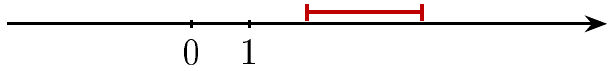 |
| $x\geqslant 2$ | $[2\,;+\infty[$ | 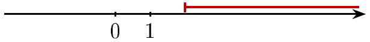 |
| $x>-1$ | $]-1\,;+\infty[$ | 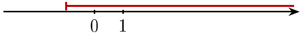 |
| $x\leqslant 3$ | $]-\infty\,;3]$ | |
| $x<2$ | $]-\infty\,;2[$ |
Remarque : l'ensemble des nombres réels $\R$ est un intervalle qui peut se noter $]-\infty\,;+\infty[$.
6.2 Application aux inéquations
Une inéquation est une inégalité qui contient une inconnue $x$.
Résoudre une inéquation, c'est trouver toutes les valeurs de $x$ qui vérifient cette inégalité. Il s'agit d'un ensemble de valeurs. Pour représenter l'ensemble des solutions, on utilise un intervalle. Les techniques de résolution des inéquations sont semblables à celles utilisées pour les équations.
Méthode : résoudre l'inéquation et donner les solutions sous forme d'un intervalle : $2x-3<4$
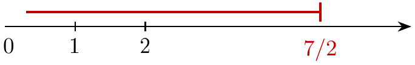
L'ensemble des solutions est l'intervalle $\left]-\infty\,;\dfrac{7}{2}\right[$.
6.3 Intervalle ouvert et intervalle fermé
On dit qu'un intervalle est fermé si ses extrémités appartiennent à l'intervalle.
On dit qu'il est ouvert dans le cas contraire.
- l'intervalle $[-2\,;5]$ est un intervalle fermé. On a : $-2\in[-2\,;5]$ et $5\in[-2\,;5]$ ;
- l'intervalle $]2\,;6[$ est un intervalle ouvert. On a : $2\notin]2\,;6[$ et $6\notin]2\,;6[$ ;
- l'intervalle $]6\,;+\infty[$ est également un intervalle ouvert.
6.4 Intersections et réunions d'intervalles
- l'intersection de deux ensembles $A$ et $B$ est l'ensemble des éléments qui appartiennent à $A$ et à $B$ ; on le note $A\cap B$ ;
- la réunion de deux ensembles $A$ et $B$ est l'ensemble des éléments qui appartiennent à $A$ ou à $B$ ; on la note $A\cup B$.
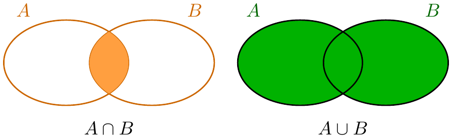
Méthode : déterminer l'intersection et la réunion d'intervalles
Dans les cas suivants, déterminer l'intersection et la réunion des intervalles $I$ et $J$ :
- $I=[-1\,;3[$ et $J=]0\,;4[$
- $I=]-\infty\,;-1]$ et $J=[1\,;4]$
1) Pour visualiser les ensembles solutions, on peut représenter les intervalles $I$ et $J$ sur un même axe gradué.
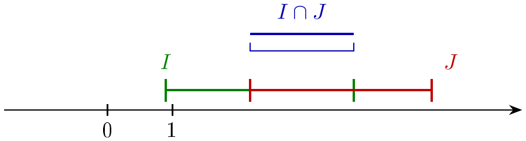
Les nombres de l'intersection des deux ensembles sont les nombres qui appartiennent à la fois aux deux ensembles : il s'agit donc de la zone de l'axe gradué où les deux ensembles se superposent. Ainsi $I\cap J=[0\,;3]$.
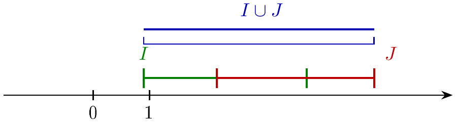
Les nombres de la réunion des deux ensembles sont les nombres qui appartiennent au moins à l'un des deux ensembles : il s'agit donc de la zone de l'axe gradué marquée soit par l'intervalle $I$, soit par l'intervalle $J$. Ainsi $I\cup J=[-1\,;4[$.
2)
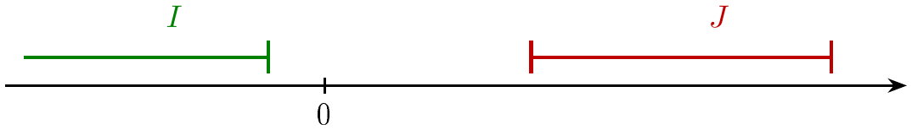
Ici, les ensembles $I$ et $J$ n'ont pas de zone en commun. L'intersection des deux intervalles est vide.
Un ensemble qui ne contient aucun élément s'appelle l'ensemble vide et se note $\varnothing$.
On a alors : $I\cap J=\varnothing$ et $I\cup J=\left]-\infty\,;-1\right]\cup \left[1\,;4\right]$.
VII. Valeur absolue d'un réel
7.1 Définition
Exemples :
- la valeur absolue de $-5$ est égale à $5$ ;
- la valeur absolue de $8$ est égale à $8$.
La valeur absolue d'un nombre $A$ est égale au nombre $A$ si $A$ est positif, et au nombre $-A$ si $A$ est négatif. La valeur absolue de $A$ se note $|A|$.
Soit $x$ et $y$ deux nombres réels.
7.2 Distance et valeur absolue
Soient $a$ et $b$ deux nombres réels. Sur une droite graduée, la distance entre les points $A$ et $B$ d'abscisses respectives les nombres $a$ et $b$ est le nombre $|a-b|$.
Calculer la distance entre les nombres $-1{,}5$ et $4$ :
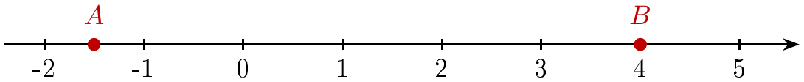
Soit $a\in\R$.
Dire que $x$ est tel que $|x-a|\leqslant r$ signifie que $x$ appartient à l'intervalle $[a-r\,;a+r]$.
Soit un réel $x$ tel que $|x-5|\leqslant 2$. Cela signifie que $x\in[5-2\,;5+2]$, soit $x\in[3\,;7]$.
Géométriquement, cela se traduit par le fait que la distance du point d'abscisse $x$ au point d'abscisse $5$ est inférieure ou égale à $2$.
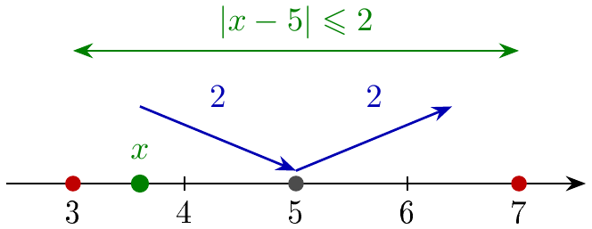